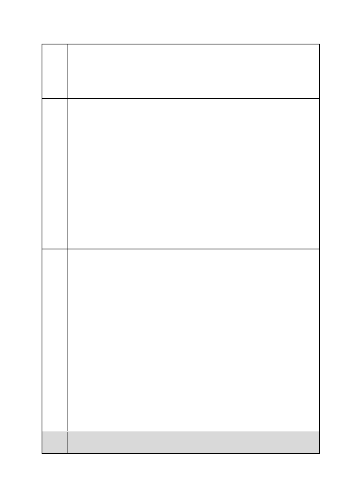

臺北市都市計畫委員會 公民或團體陳情意見綜理表
「變更臺北市信義區逸仙段二小段 33 地號等 21 筆土地（原臺北機廠）
案
名
工業區為創意文化專用區、特定專用區、道路及綠地用地主要計畫案」
及「擬定臺北市信義區逸仙段二小段 33 地號等 21 筆土地（原臺北機
廠）創意文化專用區、特定專用區、道路及綠地用地細部計畫暨劃定
都市更新地區計畫案」
共資產！
【註】客車工場、車件工場、電三工場、鈑金工場都屬車輛工區，依
照維修流程將工區分為一個個工作站。電聯車進入客車工場後隨即拆
解，車身與車廂內設備留下繼續維修、裝配，卸下的零件送往其他工
場檢查、更新，最後在客車工場重組出廠。為有效利用廠區空間，車
件工場與客車工場東側設有遷車臺，以便將維修車輛移到下個維修
點。
5.台鐵應儘速開放臺北機廠辦理導覽等環境教育活動。
現下，正是開放社群/區參與的最佳起點，臺北機廠已無工廠運作之
實，除短期配合文化局辦理之鐵道文化節外，廣大市民對北廠的親近
不得其門而入。鐵路局不應將寶貴的文化資產封閉，大可配合公民團
體，辦理北廠導覽員培訓，定期辦理市民入廠導覽，以擴大社群／區
的參與基礎，爭取更多關注及認同。
市府
回應
委員
會議
一、有關全區保存及請行政院重新界定臺北機廠為文史資產活化重要
案例等建議，詳編號 1 市府回應說明。
二、有關商業用途勿喧賓奪主之建議，查主要計畫之規劃原則與構想
已載明本計畫區以市定古蹟、歷史建築為發展核心，透過重要工業地
景之連結，維繫點狀分布之舊建築物連結成系統性之空間脈絡，周圍
地區則在對整體鐵道文化景觀及文化資產衝擊儘可能減少之前提
下，適度配置與舊建物景觀相融合之新建物。至最大綠色保存之建
議，細部計畫書亦載明計畫區內受保護樹木以原地保留為原則，其他
樹群植生以區內保留為原則。若需配合建築開發移植，應研擬妥善之
移植計畫。
三、有關臺北機廠未來經營應充分納入社群參與之建議，係屬經營管
理層次，非屬都市計畫應載明事項。建議請本府文化局及交通部臺灣
鐵路管理局納入未來經營管理策略之參考。
四、有關開放臺北機廠辦理導覽等環境教育活動之建議，查本府文化
局自 102 年即與交通部臺灣鐵路管理局合作辦理臺北鐵道文化節，讓
民眾認識臺北機廠的重要工業遺產，103 年臺北鐵道文化節亦訂於
103 年 9 月 27 日舉辦。
內容同編號 1。
第 95 頁/共 154 頁